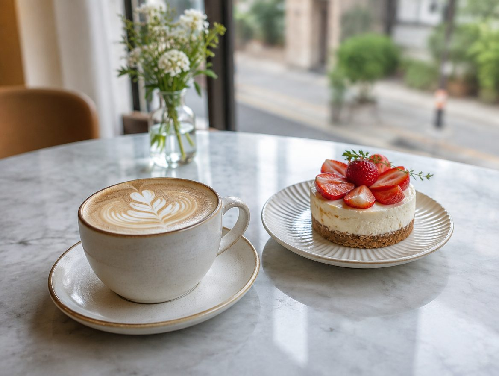

NEIGHBORHOOD CAFE우리 동네, 잠깐의 여유
가볍게 한 잔,천천히 나누는 이야기.
메뉴와 구성은 시안 예시이며 실제 가격·판매 여부는 업체 확인 후 표시합니다.

진한 한 잔부터 우유와 어울리는 맛까지.
커피 대신 고르는 향과 온도.
가볍게 곁들이는 달콤한 시간.
혼자 방문한 고객이 확인할 좌석 분위기를 보여주는 구역입니다.
좌석 배치와 인원 조건은 실제 매장 자료로 안내합니다.
테이크아웃 가능 메뉴와 수령 방법을 확인합니다.